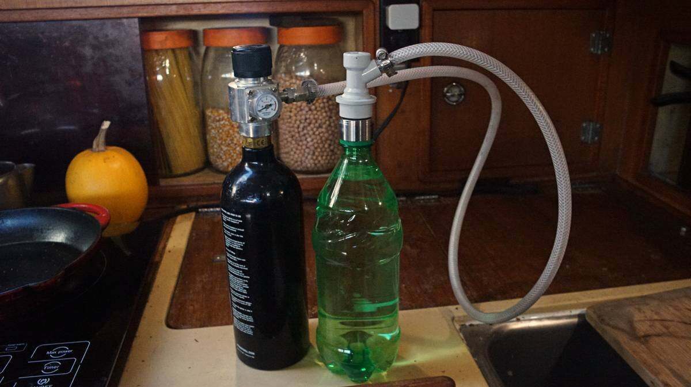

carbonation
We do enjoy having some fizzy water now and again. Carbonation elevates aroma and produces an appealing mouthfeel often described as "tingling". Because we lack refrigeration aboard Pino, in the summer carbonated water feels cold even if it isn't.
We decided to make our own system because...
- We can refill our own CO2 bottles.
- It is possible to use a bigger CO2 tank which will cost less, and last longer.
- We can choose a quality SS keg that will outlast any other type of carbonating vessel.
- It uses no electricity (no microchips, like some Soda Stream systems).
- It is possible to choose robust parts which won't degrade, or fail.
- We like having a deeper understanding and control of our systems. Nothing is abstracted, or hidden.
See our diy carbonation system.